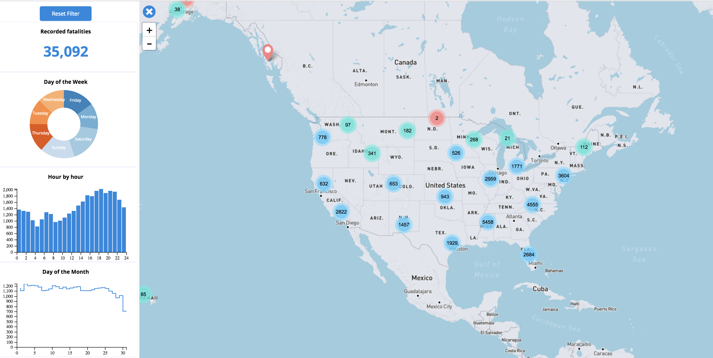
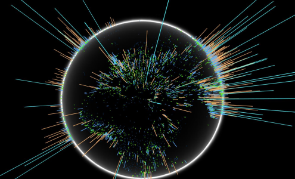
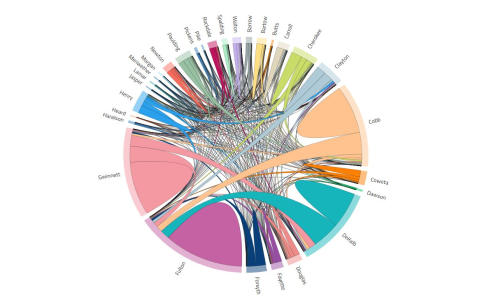
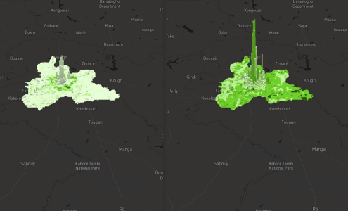
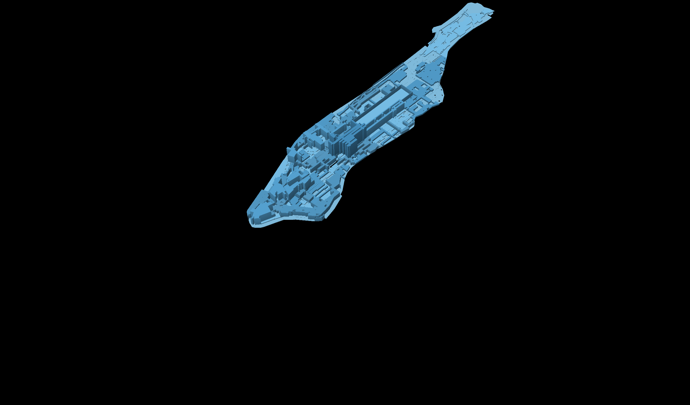

Accessing images, calculating NDVI and time-series analysis using Google Earth Engine
EarthEngine | Javascript
Testing computer vision algorithms for satellite image processing and analysis
Python
Exploratory data analysis of conflicts based on Historical data collected from ACLED
R
Geographical Weighted Regression, Moran's I, & Autoregressive Spatial Model
R
Image Enhancement, Decision Trees and XG-Boost Classifer for builtup surface extraction
Python
Multi class image classification with Random Forest and Post Classification Change Detection
Python
Supervised (Random Forest) and Unsupervised (K-Means) Image Classifications
Python
Spectral Indicies(NDVI, NDVI, NDVI and NDVI) and Tassled Cap Transformation
Python
Image enhancment with filters, and dimension reduction with principal component analysis
Python


Chrome Experment visualizaition of population size data for 7,314 Cities
WebGL

Share of commute to and from 28 counties incorporated in metropolitan Atlanta
D3.js

Data driven 3D map of change in children's vaccination cover in three african cities
Mapbox | R


Three decade spanning spatial and temporal change in drug use related arrests in the U.S.
D3.js

Hi, My name is Adane (Eddie) Bedada and I'm a Geospatial Data Scientist.
I'm, primarly, interested in using geospatial data to study geographic patterns. My academic training is in digital image processing, spatial time-series modeling and machine learning.
My research and work experience include:
I recieved my MSc in Geography with a focus on Machine Learning and GIS from the George Washington University, MSc in Geography as well as BA in Geography and Environemntal Studies from two academic institutions in Ethiopia.
I'm, primarly, interested in using geospatial data to study geographic patterns. My academic training is in digital image processing, spatial time-series modeling and machine learning.
My research and work experience include:
- developing object detection models (recent)
- researching advesarial machine learning for overhead imagery
- studying the change in vaccination pattern in 10 African cities
- detecting the spatial pattern of wild-fire in California
- leveraging imagery to study built-up in Sri Lanka, Belize and Tanzania
- producing maps for outdoor led light installation in Atlanta, GA
I recieved my MSc in Geography with a focus on Machine Learning and GIS from the George Washington University, MSc in Geography as well as BA in Geography and Environemntal Studies from two academic institutions in Ethiopia.
ሠላም፡
ስሜ አዳነ ለገሰ በዳዳ ይባላል። የመልክዐ-ምድር መረጃ(ዳታ) ሳይንስ ባለሙያ ነኝ።
በትምህርት ያገኘሁት ስልጠና በመንኮራኮር (ሳተላይት) የሚነሱ ምስሎችን በማጥናት ፤ በአንድ ስፍራ ላይ በተለያዩ አመታት ወይም ወቅቶች የሚታየውን
ለውጥ በመቀመርና ኮምፒውተሮች እውቀትና ግንዛቤ እንዲኖራቸው በማድረግ ላይ ያተኮረ ነው። በአጭሩ አትኩሮቴና ፍላጎቴ በሰው ልጆችና
በምንኖርባት ምድር መካከል ያለውን ግኑኝነት የሚያሳዩ ጥናቶችን መስራት ነው።
የስራ ልምዴ የተለያዩ ምርምሮችና ተግባራቶችን ያካተተ ሲሆን ከነዚህም መካከል የሚከተሉት ይገኙበታል።
የስራ ልምዴ የተለያዩ ምርምሮችና ተግባራቶችን ያካተተ ሲሆን ከነዚህም መካከል የሚከተሉት ይገኙበታል።
- በሳተላይት ምስል ላይ የሚታዩ መኪኖችን የሚያገናዝብና የሚቆጥር መሳሪያ (ከሰሞኑ)
- በካሊፎርኒያ የሚነሳውን የነድድ-አሳት የምድራዊ ስርዐትና ስፋት መገምገም
- በስሪላንካ፣ ቤሊዝና ታንዛኒያ ሃገሮች ላይ ያለውን ሰው ሰራሽ ምድር መጠን መገመት
- የህጻናት ክትባት በአፍሪካ አሃጉር በሚግኙ አስር ከተሞች ላይ ያመጣውን ለውጥ የሚያሳይ ጥናት
ሁለተኛውን የሁለተኛ ዲግዬን ከጂዎርጅ ዋሸንግተን ዩኒቨርሲቲ በመልክዐ-ምድር ጥናት እንዲሁም የመጀምሪያውን ሁለተኛ ድግዬን ከመቀሌ ዩኒቨርሲቲ እና የመጀምሪያ ዲግሪ ከወለጋ ዩኒቨርሲቲ በመልክዐ መድርና አካባቢያዊ ጥናት ላይ ተቀብያለሁ።